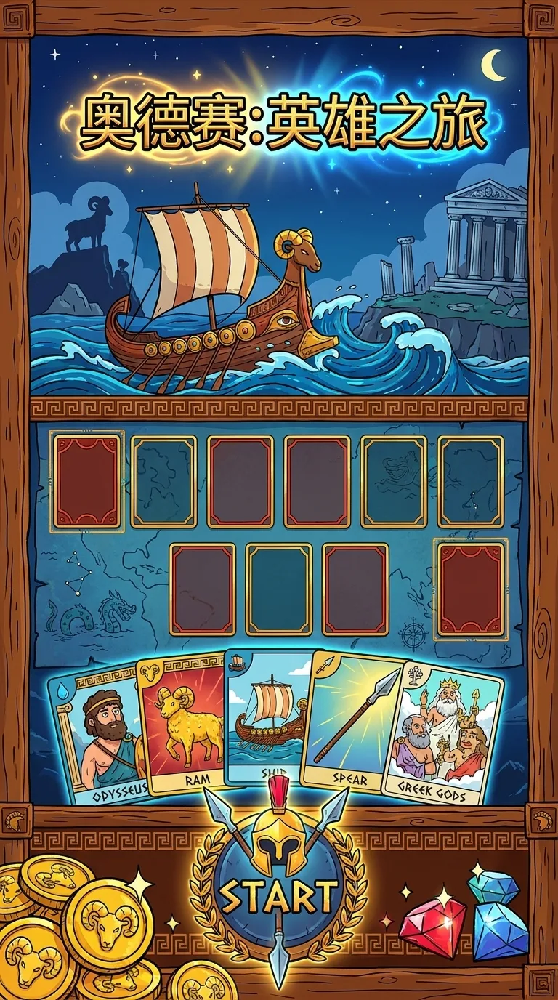

UI & Systems / PROJECT 23
奥德赛
奥德赛 · 英雄之旅
「奥德赛 · 英雄之旅」是一款以古希腊史诗为背景的卡牌对战游戏 UI 系统。
- ROLE
- 个人系统与界面设计
- TIME
- 项目年份待确认
- TOOLS
- 设计工具清单未提供
- TYPE
- Personal system
- STATUS
- Private Prototype / Local Deployment

01 / OVERVIEW
Overview
「奥德赛 · 英雄之旅」是一款以古希腊史诗为背景的卡牌对战游戏 UI 系统。整套界面采用手绘卡通风格：粗犷的黑色描边、鲜艳的撞色搭配与木质描边相框，让厚重的神话题材兼具活泼与史诗感。从奥德修斯扬帆起航的初始界面，到公羊冲锋的史诗战场，再到胜利结算与宝箱奖励，四个核心界面完整覆盖了「出战 → 对局 → 结算 → 领奖」的游戏闭环。公羊、战船、长矛、希腊众神等主题元素贯穿始终，配合金币宝石资源体系与希腊回纹装饰，形成了高度统一的视觉语言。
02 / INTERFACE & INTERACTION
Interface & interaction
- 可玩衍生版：单人回合制卡牌冒险，三段航程、六种卡牌、敌人意图、战后祝福与本地存档；点击「开始游戏」体验
- 初始界面：奥德修斯航海冒险场景，游戏标题 + START 入口 + 金币宝石资源显示
- 战斗界面：双方卡牌对局、战力统计、回合控制与暂停，公羊冲锋的史诗战场
- 结算界面：胜利场景，战果卷轴统计（伤害 / 掉落 / 回数 / 用时）+ 成就徽章
- 奖励界面：宝箱开启场景，金币 / 宝石 / 特殊卡牌的奖励呈现与领取动效
03 / PROTOTYPE
Prototype
演示在独立游戏页面打开。本地进度保存在当前浏览器，清理浏览器数据会移除存档。
04 / SCOPE & NEXT QUESTIONS
Scope & next questions
以实际可玩的原型呈现交互与视觉决策。本页不把完成原型等同于市场验证，也不提供未经证实的玩家数量、留存或商业结果。
CONTINUE EXPLORING